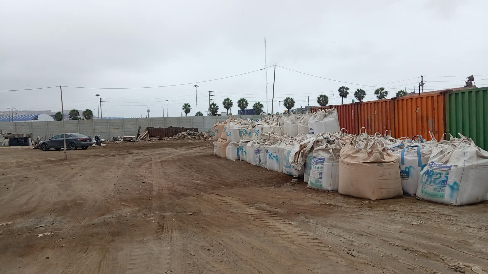
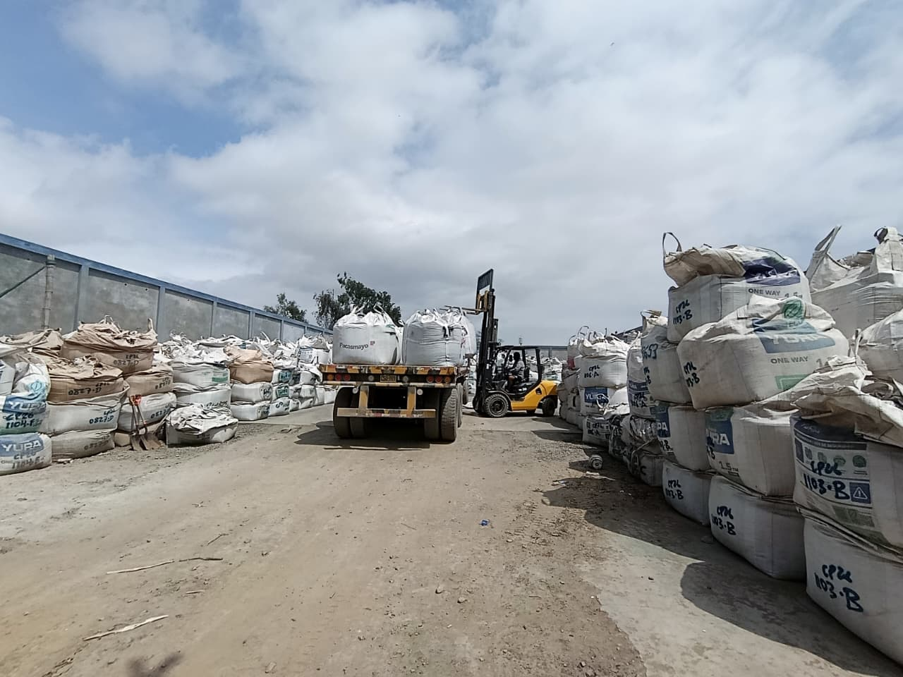

En Ciapeco S.A.C. somos una empresa pequeña pero moderna, especializada en la exportación de minerales polimetalicos molidos desde el Perú hacia China. Facilitamos el transporte seguro gracias a la infraestructura del Puerto de Chancay, garantizando un servicio ágil, confiable y adaptado a las necesidades de nuestros clientes.
Comercializar y exportar minerales molidos de alta calidad desde el Perú hacia el mercado asiático, brindando un servicio ágil, transparente y seguro. Optimizamos cada etapa desde el acopio en Chorrillos y Trujillo hasta el embarque en el Puerto de Chancay, generando valor sostenible para nuestros socios y clientes.
Consolidarnos como una exportadora peruana referente y altamente confiable en el comercio exterior minero hacia China, destacando por nuestra eficiencia logística, riguroso control de calidad y el crecimiento continuo de nuestra capacidad operativa y red de alianzas internacionales.
Cumplimiento total con las normativas para una comercialización minera segura y transparente.
Inspección rigurosa y control de calidad en cada lote mineral.
Conexión directa y segura con el mercado de China.
Contamos con almacenes de acopio estratégicos en Chorrillos (Lima) y Trujillo para facilitar el flujo constante de carga.

